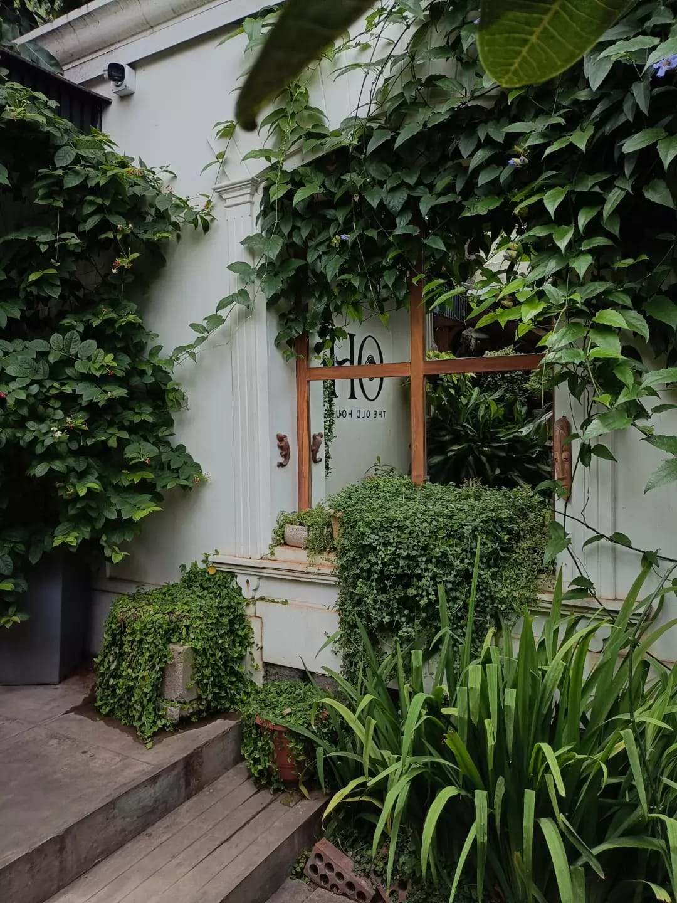
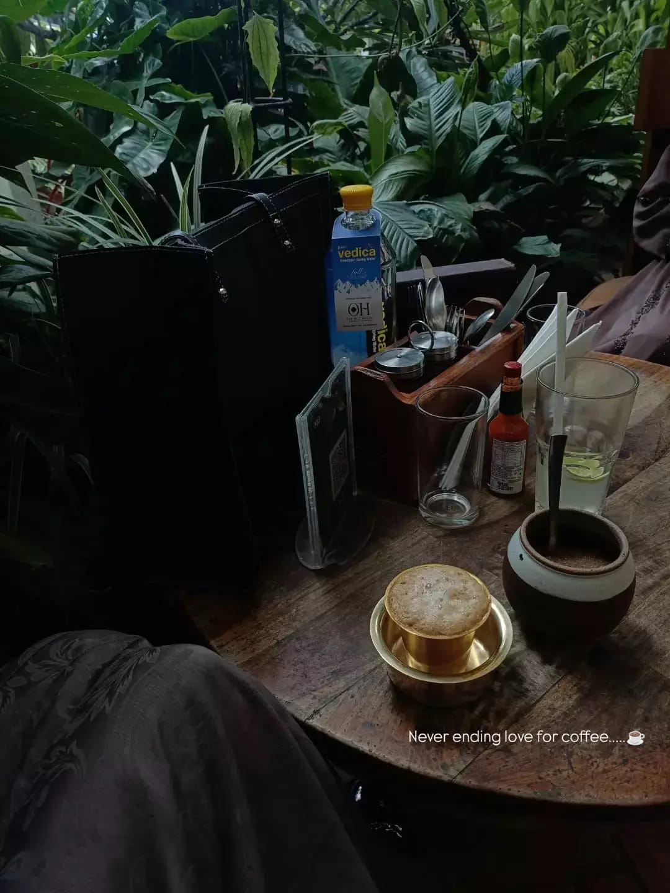
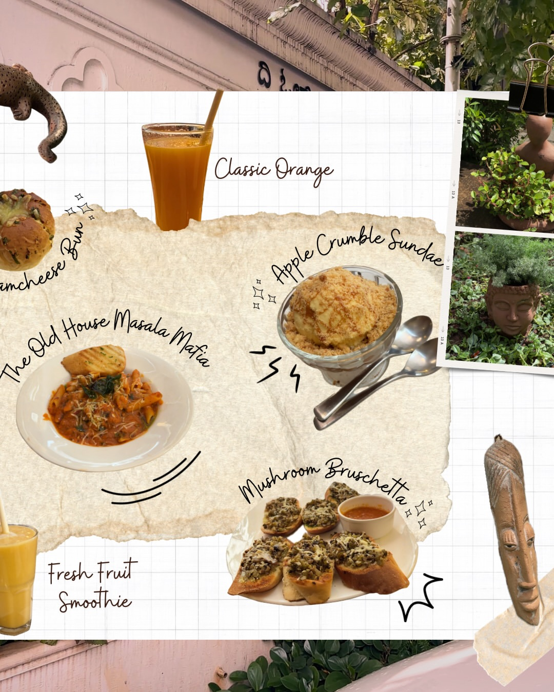

THE OLD HOUSE · MYSURU
A VISUAL JOURNEY
From the old-house architecture and peaceful garden corners to warm interiors and everyday café moments, this collection captures the character of The Old House.

Old-world character surrounded by greenery.

Little spaces made for slowing down.

A glimpse into the everyday atmosphere.

The welcoming atmosphere of The Old House.

Warm interiors with an old-house feeling.

Architecture and details that give the house its identity.

Greenery surrounding the café.

Peaceful spaces filled with natural surroundings.

A calm escape from the city.

Green, relaxed and unhurried.

A cosy atmosphere inspired by home.

A place to pause and stay awhile.

Where the old house meets café culture.
MOVING MOMENTS
Easy Mysore mornings, with food from around the world and Indian specialty coffee.
A visual look at the creativity, details and presentation behind the café experience.
“A little piece of old Mysuru, wrapped in warmth and timeless charm.”
— The Old House